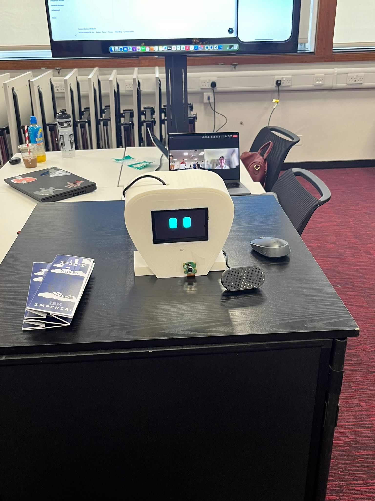
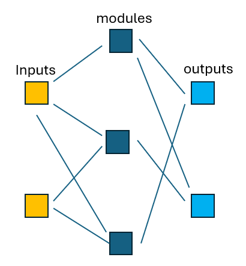

Engineering, robotics, AI, and research projects.
This project involved the development of an autonomous rover system capable of navigating rough terrain while identifying and classifying rock samples using radiation and ultrasound sensing technologies.
The rover integrated embedded systems, sensor fusion, robotics control, and autonomous navigation algorithms for environmental exploration tasks.
I was responsible for the design of the mechanical chassis and individual components of the rover. The main skills required was to design specific parts that meets the requirements of each aspects of the project. I was also part of the electronic design team where we work together to make electronic sensors such as infrared or ultrasound sensors using electronic scraps in the laboratory.
Developed a two-wheel self-balancing robot capable of autonomous maze exploration and navigation. The system combined dynamic balancing control with mapping and path-planning algorithms.
The project focused heavily on feedback control systems, IMU processing, real-time robotics behaviour, and autonomous decision-making.

Designed and developed an AI-powered robotic companion intended to provide assistance and interaction for elderly individuals.
The project explored human-robot interaction, intelligent behaviour, emotional engagement systems, and assistive robotics technologies.
Movendor is a mobile robotic vending platform capable of navigating both indoor and outdoor environments while interacting with potential customers using AI-driven perception systems.
The robot was designed for autonomous movement, customer detection, product promotion, and smart interaction within public spaces.
The project involves designing a kinematic controller for a 5 DoF robotic manipulator using inverse kinematics. The manipulator was programmed to perform pick-and-place, drawing and a human-interactive tasks. The final product was a robotic ice cream server capable of scooping ice creams and inserting piscuit sticks and add toppings based on choice.
The robot uses dynamixal servo motors with custom dynamic behaviours. The robot is equipped with a custom designed, 3D printed end effector gripper made in Solidworks CAD.

This research project focused on training robotic systems using neuroevolution strategies and modular neural network architectures within simulated 2D and 3D environments.
The work explored co-evolution methods, evolutionary computation, reinforcement learning concepts, and adaptive robotic intelligence.